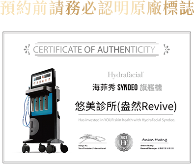

海菲秀(HydraFacial®)為非侵入、非雷射類的肌膚保養療程，使用一系列HydroPeel®專利端頭，其端頭的螺旋刮片設計搭配負壓技術，使精華液注入肌膚過程中產生渦漩效果，讓髒污脫落的同時給予肌膚滋潤與抗氧化防護。
-

將肌膚角落難清潔及頑固的粉刺一一挑出。
-
★ 專利渦漩技術
渦漩注入技術，能深入毛孔，溫和地清除老廢角質、黑頭粉 與臟污，同時注入保濕精華，讓肌膚深層清潔又保濕。
-
★ 客製化療程
根據不同膚質和問題，搭配不同功效的精華液，提供客製化的保養。
-
★ 無痛無創
非侵入式、無傷口、無熱破壞，無恢復期，不影響日常生活。
-
★ 多重功效
清除粉刺、改善毛孔粗大、提亮膚色、增加肌膚彈性、減少細紋等。
-
★ 安全快速
全膚質適用的醫療級專業儀器，療程時間約30分鐘，效果顯著，快速改善各式肌膚問題。
海菲秀 |
傳統做臉 |
|
|---|---|---|
| 清潔方式 | 透過水流和真空吸力， 深層清潔毛孔 |
以手動方式清潔、按摩臉部 |
| 療程時間 | 30分 | 約1-2小時 |
| 療程效果 | 專利螺旋刮片，深層清潔保養 | 清除粉刺無法深層保養 |
| 舒適度 | 舒適無痛 | 易紅腫痛 |
| 恢復期 | 無恢復期，可立即上妝 | 容易輕微紅腫，需休息數小時 |
| 安全性 | 溫和無痛，不易造成肌膚刺激 | 肌膚敏感者可能因手勢過重造成肌膚紅腫或敏感 |

-
Q1.海菲秀安全嗎？
海菲秀受美國 FDA 與台灣 TFDA 雙重認證，溫和舒適，無恢復期，是一項適合各膚質使用的非侵入式保養療程。
-
Q2.海菲秀療程需要多少時間？
海菲秀療程時間約為30分鐘，透過經典3步驟，帶給皮膚柔嫩透亮，增強抗氧化防護力。
-
Q3.海菲秀會痛嗎？有恢復期嗎？
海菲秀為非侵入式保養療程，舒適無痛，不會造成肌膚傷口，也無恢復期，且完全不影響日常作息，無需擔心。
-
Q4.海菲秀有副作用嗎？
海菲秀為醫學美容療程，療程後立即可見皮膚細緻平滑且充滿水份，同時不會對人體造成任何傷害，所以療程後也不會產生副作用。然而海菲秀療程後少部分的人會有暫時性刺激、緊繃或泛紅的情形發生，但皆為正常現象，通常於療程後72小時內會逐漸恢復。
-
Q5.海菲秀需要進行幾次才可以見效？
海菲秀療程結束後能立即見到效果，肌膚會變得細緻平滑、均勻透亮，且充滿水潤感。建議每個月可以進行一次保養療程，改善皮膚及穩定膚況。
-
Q6.海菲秀與水飛梭一樣嗎？
海菲秀與水飛梭最主要的差別在於有沒有經過衛福部認證。水飛梭是一種廣泛的稱呼，指的是能深層清潔毛孔的儀器。而海菲秀則是經過衛福部認證的醫美儀器，採用專利渦漩技術，徹底清潔毛孔、去除老廢角質、黑頭粉刺，同時還能深層滋潤肌膚，是只能在醫美診所施作的療程，具有品質與效果保證。
-
Q7.海菲秀術後如何保養？
術後一週建議加強保濕與防曬，並使用至少 SPF40 以上的防曬隔離品及避免酸類與去角質產品。